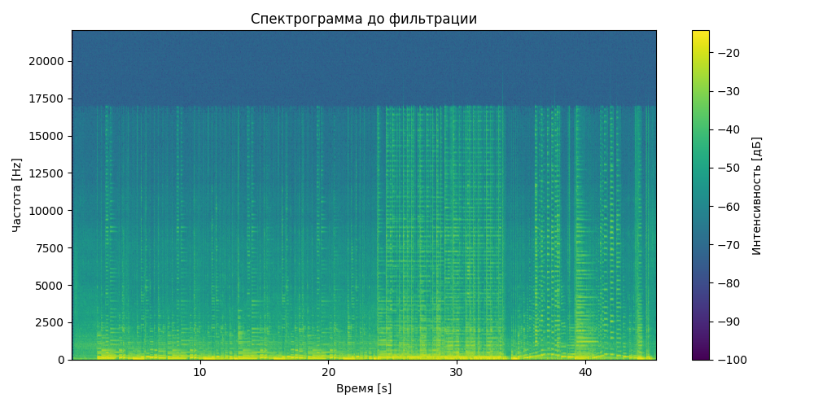
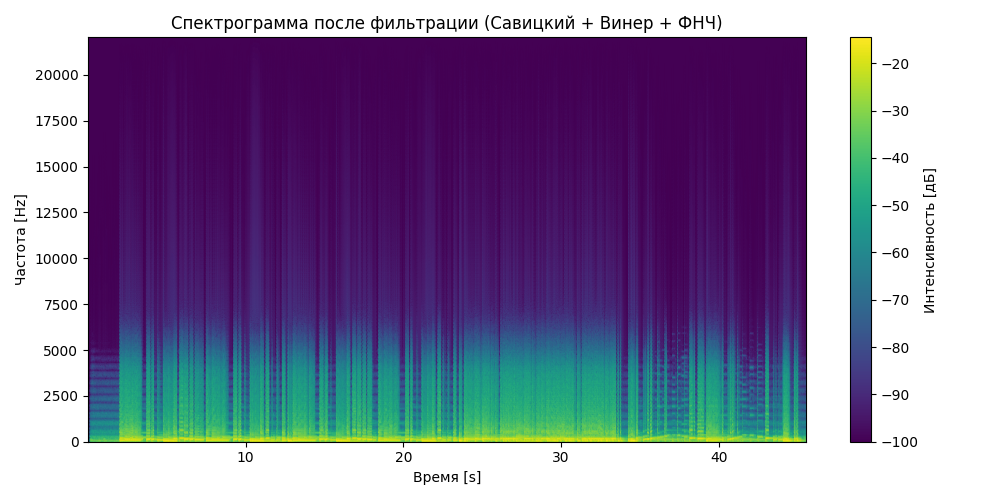
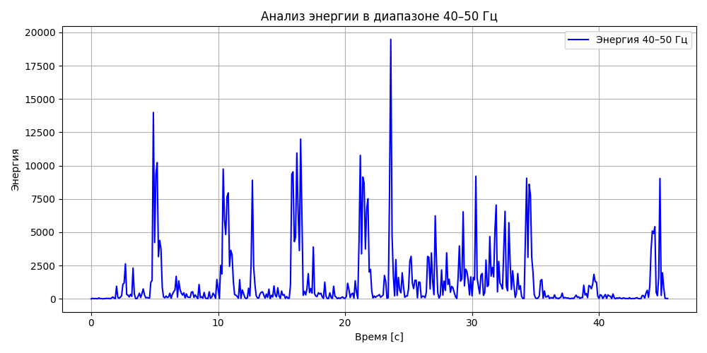

<h1 id="лабораторная-работа-9-анализ-шума">Лабораторная работа №9 Анализ
шума</h1>
<h2 id="аудиофайлы">🎵 Аудиофайлы</h2>
<h3 id="оригинальный-сигнал">Оригинальный сигнал</h3>
<audio controls>
<source src="music.wav" type="audio/wav">
<p>Your browser does not support the audio element. </audio></p>
<h3 id="фильтрованный-сигнал-савицкийголей-винер-фнч">Фильтрованный
сигнал (Савицкий–Голей + Винер + ФНЧ)</h3>
<audio controls>
<source src="guitar_filtered_all.wav" type="audio/wav">
<p>Your browser does not support the audio element. </audio></p>
<h2 id="спектрограммы">Спектрограммы</h2>
<h3 id="до-фильтрации">До фильтрации</h3>
<figure>

<figcaption aria-hidden="true">Спектрограмма до фильтрации</figcaption>
</figure>
<h3 id="после-фильтрации">После фильтрации</h3>
<figure>

<figcaption aria-hidden="true">Спектрограмма после
фильтрации</figcaption>
</figure>
<h2 id="анализ-энергии-в-диапазоне-4050-гц">Анализ энергии в диапазоне
40–50 Гц</h2>
<figure>

<figcaption aria-hidden="true">График энергии 40–50 Гц</figcaption>
</figure>
